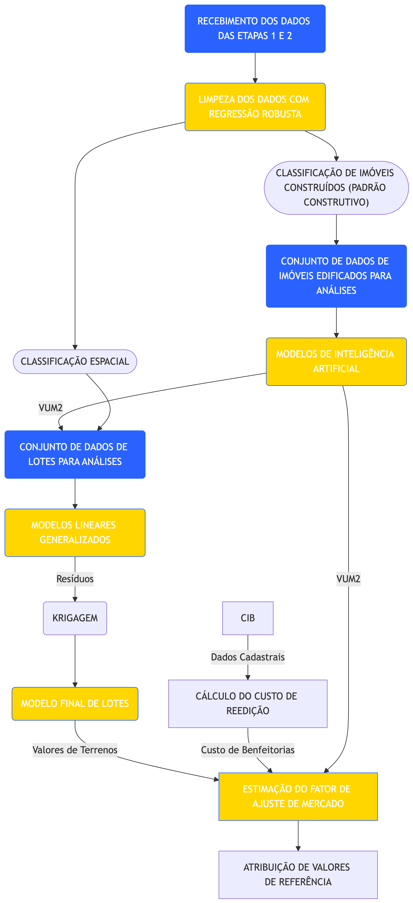
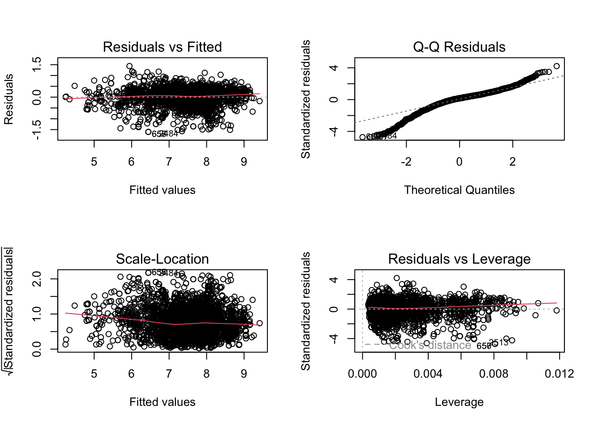
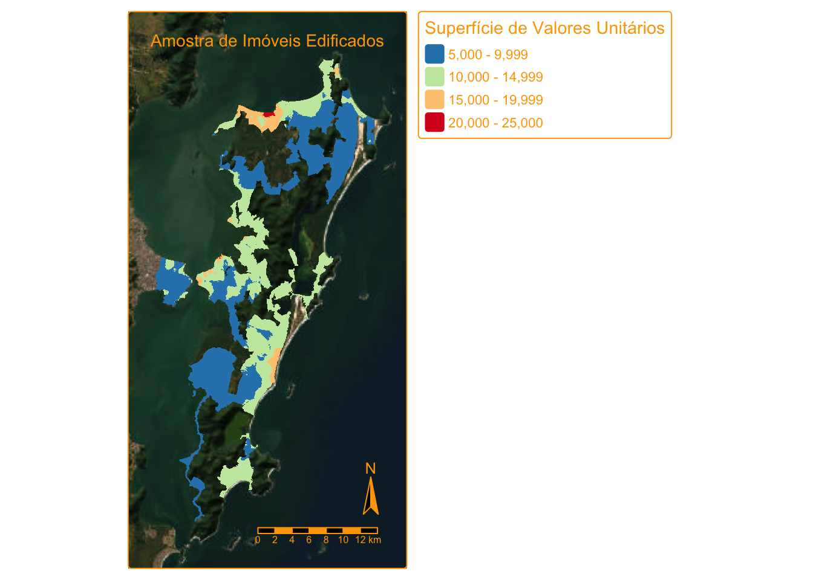
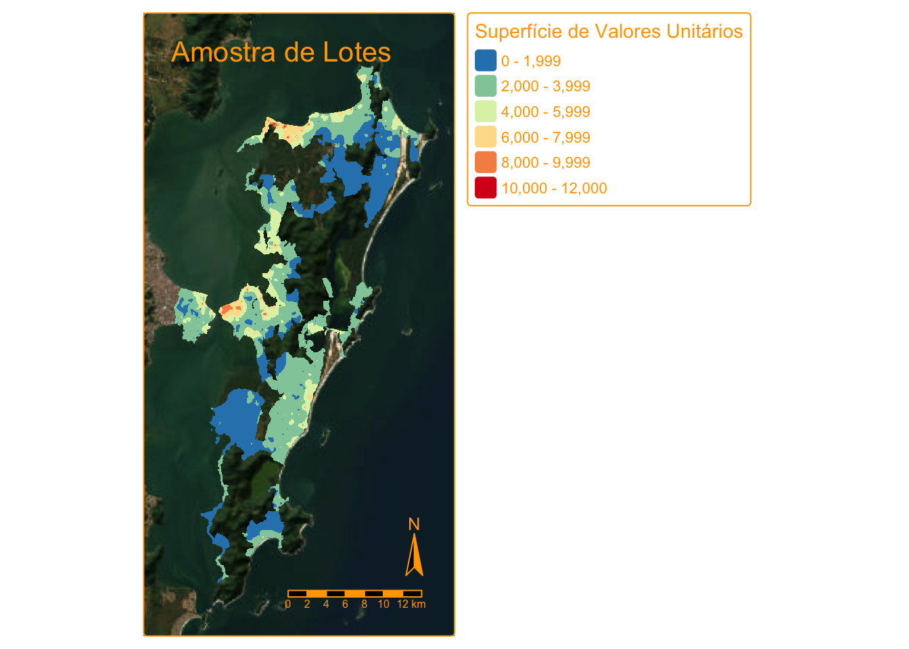

6 ETAPA 3: Modelagem e Planta de Valores Genéricos (PVG)
6.1 Introdução
Este capítulo apresenta os resultados obtidos na Etapa de Modelagem e Planta de Valores Genéricos (PVG) para a cidade de Florianópolis/SC. Na Seção 6.2 encontra-se o fluxo de modelagem utilizado. Todos os passos constantes do fluxo de modelagem são descritos na sequência. Os resultados podem ser vistos na Seção 6.7. Nas seções 6.8 e 6.9 são descritos os principais desafios encontrados e considerações sobre a escalabilidade da solução adotada para o restante do projeto.
6.2 Fluxo de Modelagem
O fluxo de modelagem pode ser visto na Figura 6.1. Basicamente, o fluxo mostra que parte do conjunto de dados (dados de imóveis edificados) foi utilizada para prever valores de metro quadrado construído (VUM2), gerando uma variável para a localização que posteriomente foi utilizada na modelagem de valores unitários de lotes, assim como na definição do fator de ajuste de mercado.
Para a estimação de valores de metro quadrado construído, foi necessária a classificação dos imóveis edificados (casas e apartamentos) segundo seu padrão construtivo. Este procedimento encontra-se detalhado na Seção 6.4.1.
Além disso, os dados foram classificados segundo a sua localização geoespacial, conforme pode ser visto na Seção 6.4.2, visando a identificação de submercados imobiliários1.

6.3 Limpeza dos dados
Os dados oriundos do observatório do mercado imobiliário foram limpos com o auxílio de regressão robusta. Na regressão linear ordinária o quadrado dos resíduos, \(r_i\), são minimizados:
\[\hat\beta_{\text{OLS}} = \min r_i^2 = \arg\min\limits_{\beta} (\mathbb y - \mathbb X\beta)^2 \tag{6.1}\]
Já a regressão robusta pode ser ajustada de diversas maneiras, com a aplicação de uma função, \(\rho\), dos resíduos diferentes da função quadrática, como ilustrado na Equação 6.2. O mais natural seria utilizar o absoluto dos resíduos, em lugar do seu quadrado. Porém, a função absoluto, \(abs(t)\), não possui propriedades desejáveis (não é uma função derivável em \(t = 0\), o que dificulta o processo de minimização). Por isso é mais comum a utilização de uma função como o M-Estimador de Huber (PETER J. HUBER, 1964), da Equação 6.3.
\[\hat\beta_{\text{RLS}} = \arg\min\limits_{\beta} \rho(\mathbb y - \mathbb X\beta) \tag{6.2}\]
Deve-se notar que a função de Huber equivale aproximadamente a um processo de Winsorização os resíduos, ou seja, a partir de um determinado valor de \(k\) (em geral igual a 1,5) os resíduos são alterados de forma que para \(|r_i| > k\) a função de minimização equivale a tomar o valor absoluto dos resíduos e para resíduos em que \(r_i \leq k\) são tomados os resíduos quadráticos.
\[ \rho_{Huber}(t) = \begin{cases} \frac{1}{2} t^2 & |t| \leq k\\ k|t| - \frac{1}{2} k^2& |t| >k \end{cases} \tag{6.3}\]
Diversas outras funções foram propostas para a Equação 6.2, como a função biweight de Tukey. No entanto, este método de estimação padece do problema de não ser robusto a outliers nas variáveis explicativas, porém apenas a outliers presentes na variável dependente (no caso, imóveis de valores muito mais altos ou mais baixos do que os que seria previstos pelos modelos).
Para dar conta dos outliers presentes nas variáveis explicativas, ROUSSEEUW (1984) propôs dois estimadores: o estimador LMS (Least Median of Squares), que minimiza a mediana dos resíduos quadráticos, e o estimador LTS (Least Trimmed Squares, ou Mínimos Quadrados Aparados), que minimiza o quadrado dos resíduos, porém apenas para os “bons” pontos da amostra:
\[ \beta_{LTS} = \underset{\beta}{\arg \min} \sum_{i=1}^h (y_i - X\beta)^2_{i:n} \tag{6.4}\]
Resumidamente, o estimador LTS da Equação 6.4 utiliza aproximadamente apenas \(h\) pontos da amostra (em geral, \(h \approx 0,5\cdot n\)) para um ajuste mais estável, e calcula os resíduos de cada ponto da amostra em relação à esta reta de regressão robusta. Após o cálculo dos resíduos os pontos são classificados como “bons” (pontos cujos resíduos padronizados são menores que 2,5 em módulo) ou “ruins” (em que \(|r_i| > 2,5\)). Por questões computacionais, a princípio o estimador LMS foi adotado em detrimento do estimador LTS. No entanto, com o desenvolvimento da capacidade de processamento dos computadores, o método LTS tornou-se mais popular e, por isso, foi o escolhido para a limpeza de dados neste projeto.
6.4 Definição de variáveis
Para os imóveis edificados, foram utilizadas as seguintes variáveis:
dist_litoral: variável numérica quantitativa que mede a distância do imóvel ao litoral, em metros;renda_pct_krigada: variável numérica quantitativa que mede a renda per capita do censo 2022 (IBGE), krigada, em Reais;tipo_imovel: variável qualitativa (dicotômica em grupo) que designa a tipologia do imóvel (Apartamento, Cobertura, Flat, Casa ou Casa de Condomínio);area: variável numérica quantitativa que mede a área privativa do imóvel, em \(m^2\);num_banheiros: variável numérica quantitativa que representa o número de banheiros do imóvel;num_vagas_garagem: variável numérica quantitativa que representa o número de vagas de garagem do imóvel;num_suites: variável numérica quantitativa que representa o número de suítes do imóvel;PC: variável qualitativa (dicotômica em grupo) que designa o padrão construtivo do imóvel (Baixo, Médio ou Alto);Tipologia: variável qualitativa (dicotômica) que divide a amostra em Apartamentos (Apartamentos, Coberturas e Flats) ou Casas (Casas e Casas de Condomínio).
Já para os lotes, foram utilizadas:
area: variável numérica quantitativa que mede a área do lote, em \(m^2\);Dist: variável numérica quantitativa que representa a média harmônica das distâncias ao centro da cidade e da distância ao litoral;VUM2: variável numérica quantitativa que representa o valor unitário do metro quadrado construído na localidade do lote;renda_pct_krigada: variável numérica quantitativa que mede a renda per capita do censo 2022 (IBGE), krigada, em Reais;ca_max: variável numérica quantitativa que representa o coeficiente de aproveitamento máximo do lote;dens_equip_saud: variável numérica quantitativa que representa a densidade de equipamentos de saúde no entorno do imóvel;tipo_uso: variável qualitativa (dicotômica) que designa se o imóvel tem um potencial de uso residencial ou comercial.
6.4.1 Classificação de imóveis construídos (padrão construtivo)
Para a classificação de imóveis construídos, adotou-se como variável principal o valor unitário (R$/m²), calculado pela razão entre preço anunciado e área privativa. Essa escolha foi feita por representar, de forma sintética, o posicionamento econômico do imóvel e refletir diferenças construtivas observáveis no mercado.
A aplicação foi realizada separadamente para os conjuntos de apartamentos e casas, preservando a heterogeneidade entre tipologias. Em seguida, a variável foi padronizada e submetida a agrupamento não supervisionado (K-Means, com k = 3), com ordenação dos grupos pela média de valor unitário e rotulagem final em três classes técnicas:
- baixo padrão;
- padrão normal;
- alto padrão.
No contexto deste relatório, o K-Means foi utilizado para organizar observações em grupos com maior semelhança interna e maior distinção externa. O algoritmo opera de forma iterativa, alternando duas etapas: (i) alocação de cada observação ao centróide mais próximo; (ii) recálculo dos centróides como média dos elementos de cada grupo. O processo é repetido até estabilização, minimizando a soma dos quadrados das distâncias intragrupo. Como resultado, obtém-se uma tipologia objetiva de padrão construtivo, sem impor limiares arbitrários de preço.

Os histogramas a seguir apresentam a distribuição do valor unitário (R$/m²) por classe de padrão construtivo gerada pelo K-Means, separadamente para apartamentos e casas. As distribuições confirmam a separação entre os grupos: em ambas as tipologias, as curvas dos padrões baixo, normal e alto apresentam picos em faixas distintas de valor, com sobreposição controlada nas fronteiras. Essa separação valida que o algoritmo capturou com consistência a segmentação econômica dos imóveis sem necessidade de limiares definidos manualmente.
Para os apartamentos (Figura 6.3), o padrão baixo concentra-se predominantemente na faixa de R$ 5.000 a R$ 15.000/m², o padrão normal entre R$ 10.000 e R$ 20.000/m², e o padrão alto apresenta distribuição mais dispersa, com valores a partir de R$ 20.000/m² e cauda longa até R$ 70.000/m², refletindo a heterogeneidade do segmento de alto padrão em Florianópolis.

Para as casas (Figura 6.4), o padrão baixo concentra-se até R$ 10.000/m², o padrão normal entre R$ 8.000 e R$ 15.000/m², e o padrão alto acima de R$ 15.000/m². Em comparação com os apartamentos, as casas apresentam faixas de valor unitário mais comprimidas e menor dispersão no padrão alto, o que evidencia diferenças estruturais entre as duas tipologias.

6.4.2 Classificação espacial
Na classificação espacial, as variáveis utilizadas foram as coordenadas geográficas dos registros (latitude e longitude) para cada tipologia de imóvel: apartamentos, casas e lotes. Utilizando as coordenadas (escala z), foi aplicado agrupamento não supervisionado (K-Means) por tipologia.
Foram geradas e comparadas as classificações class_3_cluster e class_5_cluster em cada conjunto tipológico, com inspeção visual da distribuição espacial e da separação entre grupos. Para uso operacional no fluxo da PVG, foi consolidada a classificação final class_5_cluster, por apresentar melhor equilíbrio entre detalhamento territorial e estabilidade do tamanho dos grupos.
No agrupamento espacial, o K-Means separa zonas com comportamento locacional semelhante a partir da proximidade entre coordenadas padronizadas. Embora não substitua uma regionalização administrativa formal, essa estratégia melhora a representação da heterogeneidade espacial em cada tipologia e cria estratos técnicos úteis para os modelos de valor.


6.5 Construção dos modelos
Nesta seção são reportados os modelos ajustados para os imóveis edificados e para os lotes urbanos da cidade de Florianópolis/SC.
6.5.1 Modelo de imóveis edificados
Uma vez realizada a limpeza e classificação dos dados segundo o padrão construtivo, foi ajustado um modelo de regressão linear múltipla sobre os dados de imóveis edificados (casas e apartamentos). De posse deste modelo, foram obtidos fatores de homogeneização a partir dos coeficientes estimados para as diversas variáveis explicativas. Então, com estes fatores assim ajustados, os dados da amostra de imóveis edificados foram homogeneizados, para fins de criação de uma superfície de valores de metro quadrado construído. As estatísticas do modelo de regressão de imóveis edificados podem ser vistas na Tabela 6.1.
| Termo | Coef. | Erro-padrão | Estat. t | p-valor | IC_inf | IC_sup |
|---|---|---|---|---|---|---|
| Intercepto | 12.555,05 | 0,00 | 2.311,38 | 0,00 | 12.489,52 | 12.620,92 |
| log1p(dist_litoral/100) | 0,99 | 0,00 | -13,21 | 0,00 | 0,99 | 0,99 |
| log(renda_pct_krigada/1212) | 1,10 | 0,00 | 35,59 | 0,00 | 1,09 | 1,10 |
| tipo_imovelCobertura | 0,97 | 0,00 | -7,73 | 0,00 | 0,96 | 0,97 |
| tipo_imovelFlat | 0,98 | 0,02 | -0,90 | 0,37 | 0,95 | 1,01 |
| tipo_imovelCasa | 0,76 | 0,00 | -65,96 | 0,00 | 0,75 | 0,76 |
| tipo_imovelCasa de Condomínio | 0,79 | 0,01 | -41,15 | 0,00 | 0,78 | 0,79 |
| log(area/100):TipologiaAptos | 0,88 | 0,00 | -32,86 | 0,00 | 0,87 | 0,88 |
| log(area/100):TipologiaCasas | 0,90 | 0,00 | -26,73 | 0,00 | 0,89 | 0,90 |
| TipologiaAptos:I(num_banheiros - 2) | 1,01 | 0,00 | 3,86 | 0,00 | 1,00 | 1,01 |
| TipologiaCasas:I(num_banheiros - 2) | 1,01 | 0,00 | 4,03 | 0,00 | 1,00 | 1,01 |
| TipologiaAptos:I(num_vagas_garagem - 2) | 1,05 | 0,00 | 24,70 | 0,00 | 1,05 | 1,06 |
| TipologiaCasas:I(num_vagas_garagem - 2) | 1,01 | 0,00 | 11,23 | 0,00 | 1,01 | 1,01 |
| TipologiaAptos:I(num_suites - 1) | 1,05 | 0,00 | 26,68 | 0,00 | 1,05 | 1,05 |
| TipologiaCasas:I(num_suites - 1) | 1,04 | 0,00 | 22,50 | 0,00 | 1,04 | 1,04 |
| TipologiaAptos:PCAlto | 1,55 | 0,00 | 143,46 | 0,00 | 1,54 | 1,55 |
| TipologiaCasas:PCAlto | 1,54 | 0,00 | 95,65 | 0,00 | 1,53 | 1,55 |
| TipologiaAptos:PCBaixo | 0,64 | 0,00 | -146,19 | 0,00 | 0,64 | 0,65 |
| TipologiaCasas:PCBaixo | 0,62 | 0,00 | -125,52 | 0,00 | 0,62 | 0,62 |
| a Erro-padrão dos resíduos: 0,17 em 32128 graus de liberdade | ||||||
| b R2: 0,86 | ||||||
| c R2aj: 0,86 | ||||||
| d AIC: -22.881,53 |
Como é possível notar na Tabela 6.1, foram utilizadas como variáveis explicativas do logarítmo natural dos preços unitários as variáveis citadas na Seção 6.4. É possível notar na Tabela 6.1, ainda, que as variáveis explicativas area, num_banheiros, num_vagas_garagem, num_suites e PC foram consideradas com efeitos diferentes segundo a Tipologia.
Este modelo foi utilizado para a geração de uma superfície de valores (ver Seção 6.7).
6.5.2 Modelo de Lotes
Com a variável VUM2 criada a partir do modelo de lotes edificados, foi ajustado um modelo linear generalizado, com família gamma e função de ligação log. As estatísticas desse modelo podem ser vistas na Tabela 6.2.
| Termo | Est. | Erro-padrão | Est. t | p-valor | IC_inf | IC_sup |
|---|---|---|---|---|---|---|
| Intercepto | 2.449,01 | 0,05 | 169,54 | 0 | 2.307,02 | 2.600,87 |
| log(area/450) | 0,70 | 0,01 | -49,63 | 0 | 0,69 | 0,71 |
| log1p(Dist) | 0,99 | 0,00 | -3,93 | 0 | 0,98 | 0,99 |
| log(VUM2/10000) | 2,56 | 0,05 | 18,97 | 0 | 2,40 | 2,73 |
| log(renda_pct_krigada/1212) | 1,43 | 0,03 | 14,25 | 0 | 1,38 | 1,48 |
| I(ca_max - 1) | 1,09 | 0,01 | 14,88 | 0 | 1,08 | 1,10 |
| log1p(dens_equip_saud) | 1,07 | 0,01 | 9,25 | 0 | 1,06 | 1,08 |
| tipo_usoResidencial | 0,73 | 0,04 | -8,66 | 0 | 0,70 | 0,77 |
| a Erro-padrão dos resíduos: 0,50 em 3820 graus de liberdade | ||||||
| b Pseudo-R2 (NagelKerke): 0,62 | ||||||
| c AIC: 62.643,75 |
No modelo da Tabela 6.2, para a explicação dos valores unitários dos lotes foram utilizadas como variáveis explicativas area, Dist, VUM2, renda_pct_krigada, ca_max, dens_equip_saud e tipo_uso, descritas na Seção 6.4.
Os resíduos do modelo da Tabela 6.2 foram krigados, conforme procedimento descrito na Seção 6.6, para posterior reutilização no modelo de regressão final para os lotes.
6.6 Atividades Desenvolvidas
6.6.1 Seleção de variáveis
A seleção de variáveis foi realizada de acordo com o princípio da parcimônia (navalha de Ockham). Não foi utilizado nenhum método automático de seleção: ela foi feita através da inclusão e exclusão manual de variáveis, testando com cada combinação os modelos, até que um modelo ótimo fosse obtido, apenas com aquelas variáveis consideradas importantes, evitando assim o fenômeno do overfitting.
Os algoritmos de seleção automática de variáveis, infelizmente, não são garantia de escolha do melhor modelo. Segundo MATLOFF (2017):
There is no panacea! Choosing a subset of predictors on the basis of cross-validation, AIC and so on is not foolproof by any means. Due to the Principle of Frequent Occurence of Rare Events, some subsets may look very good yet actually be artifacts.
6.6.2 Testes de modelos
O modelo utilizado para a confecção da supercíes de valores de metro quadrado construído é um modelo preditivo que, por este motivo, não demanda uma verificação pormenorizada das hipóteses da inferência clássica.
Para o modelo de lotes, contudo, seria desejável que as hipóteses da inferência clássica (linearidade, normalidade e homoscedasticidade) fossem todas verificadas. No entanto, nem sempre é fácil conseguir um modelo com estas características. A não-verificação das hipóteses da inferência clássica, contudo, não invalidam a propriedade de consistência do estimador de mínimos quadrados (MATLOFF, 2017, p. 81). Ou seja, quando o tamanho da amostra \(n\) tende a infinito, o valor estimado, \(\hat\beta\), tende a \(\beta\), independentemente de verificação das hipóteses de homoscedasticidade e normalidade.
6.7 Resultados
6.7.1 Modelo Final
Foi elaborado um modelo preliminar para os lotes de Florianópolis, apresentado na Tabela 6.2. Deste modelos foram extraídos resíduos para verificação da dependência espacial, que se mostrou presente, como de praxe. Os resíduos do modelo da Tabela 6.2 foram então krigados.
Com os resíduos krigados obtidos do modelo preliminar de lotes (Tabela 6.2), foi ajustada uma variável explicativa de localização (layer) para o ajuste do modelo final (modelo de regressão linear ordinária) de lotes, da Tabela 6.3:
| Termo | Est. | Erro-padrão | Est. t | p-valor | IC_inf | IC_sup |
|---|---|---|---|---|---|---|
| Intercepto | 7,49 | 0,03 | 256,23 | 0 | 7,45 | 7,52 |
| log(area/450) | -0,38 | 0,00 | -76,61 | 0 | -0,39 | -0,38 |
| log(VUM2/10000) | 1,08 | 0,03 | 32,09 | 0 | 1,04 | 1,13 |
| log(renda_pct_krigada/1212) | 0,35 | 0,02 | 20,44 | 0 | 0,33 | 0,37 |
| I(ca_max - 1) | 0,08 | 0,00 | 20,45 | 0 | 0,08 | 0,09 |
| log1p(dens_equip_saud) | 0,07 | 0,01 | 13,21 | 0 | 0,06 | 0,08 |
| tipo_usoResidencial | -0,18 | 0,02 | -7,33 | 0 | -0,21 | -0,15 |
| layer | 1,00 | 0,02 | 59,38 | 0 | 0,98 | 1,02 |
| a Erro-padrão dos resíduos: 0,34 em 3796 graus de liberdade | ||||||
| b R2: 0,82 | ||||||
| c R2aj: 0,82 |
Como é possível notar na Tabela 6.3, o modelo final tem poder de explicar em torno de 82% dos preços unitários de mercado, um resultado que pode ser considerado notável, se consideramos a falta de diversas variáveis acerca das características físicas dos lotes (frente, forma, pedologia e outras).
Os gráficos da Figura 6.7 mostram que não há presença de outliers ou pontos influenciantes no modelo. A normalidade dos resíduos, no entanto, hipótese da inferência clássica, não foi verificada, como fica claro quando se analisa o gráfico Q-Q.
A falta da verificação da hipótese da normalidade dos resíduos, no entanto, não invalida o modelo de regressão linear. Conforme MATLOFF (2017, p. 80–81), \(\hat \beta\) é um estimador não-viesado e consistente mesmo na ausência de normalidade e/ou homoscedasticidade.
O modelo da Tabela 6.3, portanto, pode ser considerado viável para a predição de valores unitários de terrenos visando a aplicação do método evolutivo para toda a cidade. Porém, os testes estatísticas e os intervalos de confiança dos coeficientes apresentados na Tabela 6.3 não são válidos, pela ausência da normalidade. A Tabela 6.4 apresenta, então, as estatísticas do modelo computadas com erros robustos (matriz HC3). Nota-se que não houve grandes modificações nos resultados dos testes e dos intervalos de confiança dos coeficientes em relação ao apresentados na Tabela 6.3.

| Termo | Est. | Erro-padrão | Est. t | p-valor | IC_inf | IC_sup |
|---|---|---|---|---|---|---|
| Intercepto | 7,49 | 0,04 | 195,79 | 0 | 7,44 | 7,54 |
| log(area/450) | -0,38 | 0,01 | -52,88 | 0 | -0,39 | -0,37 |
| log(VUM2/10000) | 1,08 | 0,03 | 31,82 | 0 | 1,04 | 1,13 |
| log(renda_pct_krigada/1212) | 0,35 | 0,02 | 21,01 | 0 | 0,33 | 0,37 |
| I(ca_max - 1) | 0,08 | 0,00 | 21,19 | 0 | 0,08 | 0,09 |
| log1p(dens_equip_saud) | 0,07 | 0,01 | 12,78 | 0 | 0,06 | 0,08 |
| tipo_usoResidencial | -0,18 | 0,04 | -5,20 | 0 | -0,23 | -0,14 |
| layer | 1,00 | 0,02 | 50,75 | 0 | 0,98 | 1,03 |
| a Erro-padrão dos resíduos: 0,34 em 3796 graus de liberdade | ||||||
| b R2: 0,82 | ||||||
| c R2aj: 0,82 |
6.7.2 Outputs de valor
6.7.2.1 Superfície de valores de metro quadrado construído

6.7.2.2 Planta de Valores Genéricos
Com o modelo da Tabela 6.3 é possível elaborar uma planta de valores genéricos (PVG) para a cidade de Florianópolis. Esta PVG deve ter uma escala condizente com a magnitude do projeto. Se por um lado não é viável tecnicamente a elaboração de PVG’s por face de quadras no contexto deste projeto, por outro lado a escala de trabalho não pode ser pequena a ponto de não permitir a aplicação uma tributação com um mínimo de equidade.
Uma vez definida a escala, a PVG deverá ser gerada a partir da superfície de valores unitários de lotes mostrada na Figura 6.9.
6.7.3 Outros modelos
Nesta seção são apresentados os resultados de outros modelos estatísticos elaborados para a PoC Florianópolis. São estudos de modelos de aprendizado de máquina. Tais modelos não foram utilizados para os resultados finais da PoC, por dois motivos: primeiro, os modelos foram ajustados em paralelo ao andamento previsto para a PoC; segundo, existe a dificuldade de interpretabilidade dos modelos de aprendizado de máquina. Como ilustrado na Figura 6.1, os modelos de aprendizado de máquina devem ser utilizados ao longo do projeto, porém os seus resultados deverão ser utilizados como um caminho para a estimação linear dos valores finais, mantendo assim a interpretabilidade.
6.7.3.1 Estimação de valores unitários (VU) de lotes em Florianópolis (SC)
6.7.3.2 Objetivo
Estimar valores absolutos e unitários de lotes em Florianópolis a partir de anúncios raspados no Viva Real em 01/11/2025, e gerar superfície de valores unitários estimados.
6.7.3.3 Bases de dados utilizadas
4205407_Florianopolis_r007_2026-04-06 — variavel_geografica_amostra_omi.gpkg
6.7.3.4 Preparação dos dados
6.7.3.4.1 Seleção de observações
A partir do campo arcgis_precisaoforam filtradas as observações com valores iguais a 3 ou 4. Em tipo_negocio foram filtradas “venda” ou “venda/aluguel”. Em tipo_imov filtraram-se Apartamento, Casa, Casa de Condomínio, Cobertura e Flat. Em situacao, foram filtradas as classificadas em “Urbana”.
6.7.3.4.2 Geração de dummies de tipos de uso
Foram geradas variáveis dummy para os tipos de uso constantes na base de dados: d_apartamento, d_casa, d_casa_cond, d_cobertura e d_flat.
6.7.3.4.3 Imputação de valores
Às observações com valores nulos (0) ou ausentes (NA), foram imputados valores, a partir da média dos k vizinhos mais próximos - KNN (k = 8), para as seguintes variáveis:
val_iptu: remoção prévia de valores superiores a R$ 120 mil, considerados outliers após inspeção visual (valores discrepantemente altos sem padrão espacial discernível). Foram realizadas 8 remoções. Apenas os valoresNAforam imputados, pois valores nulos de IPTU podem corresponder à realidade no caso de imóveis isentos;ca_max: corresponde ao Coeficiente de Aproveitamento máximo na localização do lote. Além dos valores ausentes, foram imputados os valores nulos, pois não se considera realista valores nulos para imóveis edificados;to_max: corresponde à Taxa de Ocupação máxima na localização do lote. Foram imputados valores ausentes e nulos, pelas mesmas razões doca_max;renda_med_pct: corresponde à renda média per capita do setor censitário. Dada a inexistência de valores nulos, apenas os valores ausentes foram imputados;classe_declividade: corresponde à classe de declividade da localização do lote, variando de 1 = plano a 5 = montanhoso. Após conversão do campo para a classe integer, imputaram-se apenas os valores ausentes, dada a inexistência de valores nulos;var_ren_media: corresponde à variância da renda média no setor censitário. Foram imputados apenas os valores ausentes, dada a inexistência de valores nulos.
6.7.3.4.4 Remoção de observações com valores NA ou artificialmente baixos para Área total
Todas as observações cuja variável Area_total exibisse valores ausentes ou menores ou iguais a 10 foram removidas. Além disso, foram removidas todas as observações com valores ausentes nas variáveis qtd_vg_garagem, qtd_suites, area_total.
6.7.3.4.5 Taxa condominial como variável dummy
A muitos imóveis nâo incide taxa condominial. Por essa razão, foram criadas colunas para valores NA de taxa_condominial (como variável dummy) e imputados valores 0 para NAs nas colunas originais.
6.7.3.4.6 Tranformação logarítmica
De modo a reduzir a assimetria da distribuição das variáveis, tanto a dependente como as independentes, com exceção das dummies, foram logaritmizadas. Antes, os valores nulos foram transformados segundo as respectivas distribuições das variáveis e valores mínimos, conforme rotina a seguir:
area_anun,area_total\(<= 10 \rightarrow\) removidos;qtd_lote,val_iptu,dens_demo_hab_km2\(= 0 \rightarrow 0,1\);dens_equip_educ,dens_equip_saud,dist_area_inund\(= 0 \rightarrow 0,01\);qtd_vg_garagem,qtd_suites, \(= 0 \rightarrow 0,1\);dist_litoral,total_pess, \(= 0 \rightarrow 1,0\);lote_medio_m2\(= 0 \rightarrow 10,0\)
6.7.3.4.7 Detecção de outliers por regressão robusta com M-estimadores
A regressão robusta é uma técnica de regressão desenvolvida para reduzir a influência de outliers ou de violações pressupostos da regressão linear convencional. Ao contrário do método dos Mínimo Quadrados Ordinários (MQO), a regressão robusta penaliza menos os erros extremos, diminuindo o impacto de pontos fora do padrão. Assim, essas observações recebem pesos (w) menores (RAZA et al., 2024).
Antes da regressão robusta, performou-se uma regressão linear simples exploratória (OLS_exploratoria) para verificação de eventuais variáveis não significativas e de multicolinearidade. As variáveis empregadas, logaritmizadas, foram definidas como:
Variável dependente: valor de venda anunciado (
log_anun_val_venda);Variáveis independentes: área privativa (
log_area_anun); n° de vagas de garagem (log_qtd_vg_garagem); n° de suítes (log_qtd_suites); n° de banheiros (log_qtd_banheiros); taxa de condomínio (log_tx_condom); valor de IPTU (log_val_iptu); área total do lote (log_area_total); coeficiente de aproveitamento máximo (log_ca_max); taxa de ocupação máxima (log_to_max); densidade demográfica em hab/km² (log_dens_demo_hab_km2); densidade de equipamentos educacionais (log_dens_equip_educ); densidade de equipamentos de saúde (log_dens_equip_saud); distância ao Centro de Florianópolis (log_dist_centro); distância ao litoral (log_dist_litoral); área média do lote em m² (log_lote_medio_m2); quantidade de domicílios (log_qtd_domic) total de pessoas residentes (log_total_pess); variação da renda média (log_var_ren_media); renda média per capita (log_renda_med_pct); classe de declividade (log_classe_declividade); distância a áreas inundáveis (log_dist_area_inund); quantidade de lotes (log_qtd_lotes), tipo de imóvel - dummy (d_casa,d_casa_cond,d_cobertura,d_flat) e dummy de taxa de condomínio (tx_cond_na).
Os resultados demonstram a não significância de log_dens_equip_educ (p = 0.6544) e log_dist_centro (p = 0.2430), removidas.
Em seguida foi executado o modelo robusto (modelo_robusto_Lotes), com a mesma especificação da OLS_exploratoria, exceto as varáveis removidas na etapa anterior.
Após a extração dos pesos w e de sua distribuição foram consideradas outliers as 5% observações com menores pesos, o que corresponde a w < 0.6137, as quais foram então excluídas.
6.7.3.4.8 Variável Padrão construtivo (PC)
Foi criada uma variável Padrão Construtivo (PC), com clusterização a partir de anun_val_venda e renda_med_pct. Foram definidas 3 classes (k = 3): baixo padrão, médio padrão e alto padrão.
Um método para a previsão espacial de clusters é a krigagem indicativa, a qual revela a probabilidade de uma variável pertencer a uma determinada classe no espaço, gerando uma classificação final a partir do maior valor de probabilidade para aquele ponto. Faz sentido porque tanto valor como renda exibem forte componente espacial. Portanto, PC também exibe alta correlação espacial.
No entanto, a krigagem indicativa revelou-se extremamente onerosa computacionalmente. Adota-se, portanto, o k-NN espacial, mais leve computacionalmente e conceitualmente próximo à krigagem indicativa (MIAO et al., 2026). Este método Compara com os k-vizinhos mais próximos e verifica a que clusters (PC) eles pertencem, adotando-se uma abordagem probabilística (% de vizinhos em cada classe). O número de vizinhos foi definido como k = 8.
6.7.3.5 Modelo OLS
O primeiro modelo produzido foi uma regressão linear simples (OLS) com a mesma especificação da regressão robusta, através da função lm (nativa do R). O modelo OLS exibiu os seguintes resultados:
- Desvio padrão residual = 0.2917 em 45375 graus de liberdade;
- R²-ajustado = 0.8249;
- Estatística F = 8225 em 26 e 45375 graus de liberdade;
- \(p < 2.2e-16\).
Os quatro gráficos diagnósticos gerados (Residuals vs Fitted, Q-Q Residuals, Scale-Location, Residuals vs Leverage) revelam pequena não linearidade residual, resíduos não normalmente distribuídos, heterocedasticidade moderada e ausência de outliers ou observações muito influentes. A não linearidade e não normalidade podem dever-se à dependência e heterogeneidade espacial. Assim, foi efetuada uma análise espacial exploratória, mediante análise de autocorrelação espacial de Moran, com os seguintes resultados:
I de Moran: 0.4696;
I de Moran esperado sem autocorrelação espacial: -2.202352e-05;
teste t: 254.24;
\(p < 2.2e-16\)
Valores que confirmam forte autocorrelação espacial nos resíduos.
Nesse sentido, um modelo combinado hierárquico - MH + machine learning - ML nos resíduos (doravante MHML) é capaz de mitigar a autocorrelação espacial. O MH absorve parte da heterogeneidade espacial, enquanto o ML nos resíduos captura não linearidades, efeitos locais (equivalente ao GWR) e a microestrutura local (LIU et al., 2022).
6.7.3.6 Modelo Hierárquico (MH)
Seguidamente, foi aplicado um modelo hierárquico (MH), com a mesma especificação do OLS, incluindo setores censitários como níveis hierarquicamente aninhados nos distritos: (1 | cd_dist/cd_setor) . A função adotada é lmer (pacote lme4).
O MH resultou nos seguintes valores de variância para os níveis hierárquicos:
- var.
cd_setor= 0.02187 (21.52%) - var.
cd_dist= 0.02069 (20.36%) - var. residual = 0.05906 (58.11%)
O que implica em alta variância espacial (~42%), justificando o modelo hierárquico. Observa-se que setor é o nível dominante, mas distrito é quase tão importante.
Em termos de ajuste da regressão, foram obtidos:
- R² marginal (efeitos fixos) = 0.782
- R² condicional (efeitos fixos + aleatórios) = 0.873
6.7.3.7 Modelo Combinado - MHML
O modelo hierárquico captura a estrutura global e os efeitos espaciais de cada nível, enquanto o modelo baseado em machine learning (ML) captura não linearidades e interações restantes. Vários estudos sugerem que, dentre os modelos ML, os baseados em Boost exibem desempenho superior aos baseados em Random Forests (RF) (HO et al., 2021; HJORT et al., 2022; LIU et al., 2024). Essa abordagem híbrida é conhecida como stacking residual ou two-stage modeling, em que um modelo estatístico principal é complementado por um algoritmo de machine learning aplicado aos erros sistemáticos não explicados inicialmente.
Estudos comparativos mostram que o XGBoost e o LightGBM apresentam desempenho muito semelhante (CHANGO-SAILEMA et al., 2026), sendo que em alguns casos o LightGBM supera (INDAH et al., 2025). Em vista dessas vantagens, optou-se pelo LightGBM, que possui melhor custo-benefício, performance comparável ao XGBoost e é mais leve.
6.7.3.7.1 Estratégia de estimação
A base de dados foi inicialmente dividida em:
- 70% para treino;
- 30% para teste
No conjunto de treino, realizou-se nova subdivisão:
- 80% treino interno;
- 20% validação.
O subconjunto de validação foi utilizado durante o treinamento do LightGBM, com mecanismo de early stopping, prevenindo sobreajuste.
6.7.3.7.2 Primeira etapa: modelo hierárquico (MH)
Inicialmente foi ajustado o modelo hierárquico linear com a mesma especificação anterior.
6.7.3.7.3 Modelagem dos resíduos
Após a estimação do MH, foram calculados os resíduos, os quais representam parcela do valor dos imóveis não capturada pelo modelo hierárquico, incluindo relações não lineares, interações complexas entre variáveis, heterogeneidades locais e padrões difíceis de representar em regressão linear. Sobre esses resíduos foi treinado o algoritmo LightGBM.
6.7.3.7.4 Parâmetros do LightGBM
O modelo foi ajustado com parâmetros conservadores, priorizando generalização:
- learning rate = 0.03;
- n° leaves = 20;
- feature fraction = 0.7;
- bagging fraction = 0.7;
- bagging frequency = 5;
- n° rounds = 200.
Foi adotado critério de parada antecipada após 20 iterações sem melhora na validação.
6.7.3.7.5 Predição final
A previsão final resulta da soma entre: previsão estrutural do Modelo Hierárquico + correção residual aprendida pelo LightGBM. Como o modelo foi estimado em escala logarítmica, aplicou-se retransfomação exponencial com Smearing Correction, corrigindo o viés da volta à escala monetária.
6.7.3.7.6 Resultados comparativos
| Modelo | R² | RMSE | MAE | MAPE |
|---|---|---|---|---|
| OLS | 0.8263 | 803.118 | 460.729 | 24.00% |
| MH | 0.8555 | 734.440 | 389.775 | 19.48% |
| MHML | 0.8884 | 633.703 | 351.822 | 18.44% |
Valores monetários em R$.
O modelo combinado (MHML) apresentou o melhor desempenho em todos os indicadores. Em relação ao OLS houve aumento substancial do poder explicativo, redução expressiva do erro absoluto médio e redução do erro percentual médio. Em relação ao modelo hierárquico isolado (MH) o LightGBM conseguiu capturar padrões residuais relevantes, houve ganho adicional de precisão e manteve-se a interpretação estrutural do MH, adicionando flexibilidade preditiva.
Apesar do ganho de desempenho, persistem erros relevantes no MHML:
- \(\text{MAE} \approx \text{R\$ } 352 mil\);
- \(\text{MAPE} \approx 18,4\%\)
Isso indica que, embora robusto, o mercado imobiliário ainda contém elevada heterogeneidade não totalmente observável.
6.7.3.7.7 Modelo final operacional
Após a validação comparativa, o MHML foi reestimado utilizando 100% da base de dados, gerando a variável final Valor_previsto_MHML_todos. Essa variável corresponde ao valor estimado de mercado dos imóveis segundo o modelo combinado final.
6.7.3.8 Geração de superfície contínua de valores unitários (IDW)
Com o objetivo de incorporar ao modelo de previsão de valores para lotes uma variável espacial representativa da dinâmica do mercado residencial, foi gerada uma superfície contínua de valores unitários (VU em R$/m²) a partir dos imóveis observados, utilizando o método de interpolação Inverse Distance Weighting (IDW). Essa superfície foi posteriormente exportada em formato raster (GeoTIFF) para uso como variável explicativa espacial no modelo de lotes.
A área de interpolação foi contruída com zona de influência de 1000 m em torno dos pontos amostrais. Posteriormente, foi gerada grade regular com resolução espacial de 100 m, sendo que cada célula da grade corresponde ao local onde o valor unitário foi estimado.
Adotaram-se os seguintes parâmetros para a interpolação IDW:
- Potência (idp) = 2;
- Máximo de vizinhos (nmax) = 50;
- Distância máxima (maxdist) = 3000 m.
Assim, cada célula foi estimada com base em até 50 imóveis localizados num raio máximo de 3 km.
6.8 Desafios
A modelagem de valores de lotes é desafiadora, especialmente por conta da falta de um cadastro urbano completo, de onde poder-se-ia extrair as características físicas dos lotes, o que certamente melhoraria a estimação. Durante o projeto, variáveis cartográficas alternativas devem ser buscadas para complementar o poder de explicação dos modelos de lotes urbanos.
6.8.1 Importância das variáveis
As variáveis mais importantes para a estimação de valores unitários de lotes podem ser extraídas da análise da Tabela 6.5: a variável mais importante para explicar os valores unitários dos lotes foi a variável area, seguida da variável de localização (layer) e da variável VUM2.
| Zero-order | Partial | Part | |
|---|---|---|---|
| log(area/450) | -0,57 | -0,78 | -0,53 |
| log(VUM2/10000) | 0,44 | 0,46 | 0,22 |
| log(renda_pct_krigada/1212) | 0,53 | 0,31 | 0,14 |
| I(ca_max - 1) | 0,22 | 0,32 | 0,14 |
| log1p(dens_equip_saud) | 0,21 | 0,21 | 0,09 |
| tipo_usoResidencial | -0,07 | -0,12 | -0,05 |
| layer | 0,41 | 0,69 | 0,41 |
6.8.2 Aderência ao mercado
A aderência ao mercado do modelo de lotes urbanos pode ser verificada subjetivamente através da análise da superfície krigada de valores unitários homogeneizados para um lote residencial padrão com 450 \(m^2\) de área.

6.9 Escalabilidade
A escalabilidade do processo de modelagem deve se dar de forma natural ao longo do projeto. Em termos de estimação, a automatização completa é um tanto temerária: não se pode prescindir de efetuar um controle de qualidade através de uma análise crítica dos modelos, verificando a coerência dos resultados obtidos. A definiçãod e um fluxograma de estimação, no entanto, como mostrado na Figura 6.1, permite a divisão das tarefas entre os membros da equipe de estimação, o que deverá tornar o processo de estimação mais eficiente, ainda que demande um controle de qualidade rigoroso.
Considera-se importante para a escalabilidade a utilização dos modelos paramétricos, melhorados, com o auxílio da krigagem, da variável de localização baseada nos resíduos de um modelo preliminar, pois isto permitirá, em tempo futuro, uma metanálise dos resultados obtidos em cada capital. Isto pode vir a permitir, após a confecção dos modelos em um número suficiente de capitais, extrapolar o conhecimento obtido para outras capitais de maneira científica, evitando-se a eventual necessidade de adoção de procedimentos duvidosos, como a adoção de fatores de homogeneização determinísticos.
6.9.1 Replicação em outros municípios
A replicação em outros municípios se dará com as devidas adaptações eventualmente necessárias para refletir a realidade dos mercados imobiliários locais.
Como argumentado acima, a eventual extrapolação do conhecimento obtido em uma cidade para outra deverá ocorrer em tempo futuro, apenas após o acúmulo de estudos suficientes para a elaboração de uma metanálise que permita que essa extrapolação seja feita com segurança.
A definição de um controle de qualidade objetivo objetivo do processo de estimação também deverá ocorrer naturalmente ao longo do projeto, com a definição de métricas adequadas para os modelos.
Apesar da classificação geoespacial efetuada, verificou-se que, em Florianópolis/SC, os modelos responderam bem à subdivisão dos mercados em distritos, portanto esta segmentação geospacial dos mercados foi adotada. Optou-se por manter aqui o estudo da divisão geoespacial do mercado para fins de eventual necessidade em outros municípios.↩︎